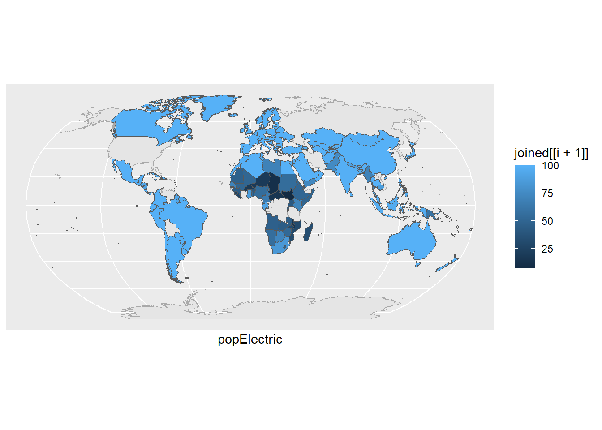
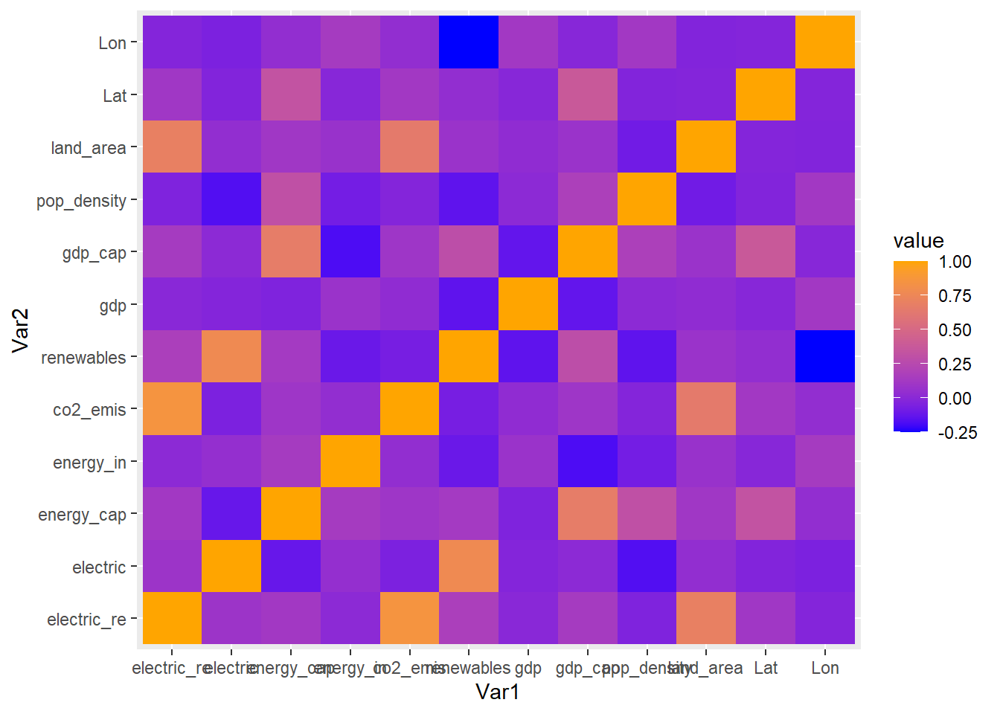

library(tidyverse)
library(here)
library(janitor)
library(rnaturalearth)
library(sf)
library(kableExtra)Global Data on Sustainable Energy (2000-2020)
The required data is download from the Kaggle
(link: https://www.kaggle.com/datasets/anshtanwar/global-data-on-sustainable-energy)
Potential Use cases
Energy Consumption Prediction: Predict future energy usage, aid planning, and track SDG 7 progress.
Carbon Emission Forecasting: Forecast CO2 emissions, support climate strategies.
Energy Access Classification: Categorize regions for infrastructure development, understand sustainable energy’s role.
Sustainable Development Goal Tracking: Monitor progress towards Goal 7, evaluate policy
Load required libraries
Read the data, view first few columns, and sum the NA values for each column
energy_data <- read_csv(here("raw_data","energy_data.csv"))
head(energy_data)# A tibble: 6 × 21
Entity Year Access to electricity (% of populat…¹ Access to clean fuel…²
<chr> <dbl> <dbl> <dbl>
1 Afghanistan 2000 1.61 6.2
2 Afghanistan 2001 4.07 7.2
3 Afghanistan 2002 9.41 8.2
4 Afghanistan 2003 14.7 9.5
5 Afghanistan 2004 20.1 10.9
6 Afghanistan 2005 25.4 12.2
# ℹ abbreviated names: ¹`Access to electricity (% of population)`,
# ²`Access to clean fuels for cooking`
# ℹ 17 more variables:
# `Renewable-electricity-generating-capacity-per-capita` <dbl>,
# `Financial flows to developing countries (US $)` <dbl>,
# `Renewable energy share in the total final energy consumption (%)` <dbl>,
# `Electricity from fossil fuels (TWh)` <dbl>, …data.frame(total_NA_count = colSums(is.na(energy_data))) total_NA_count
Entity 0
Year 0
Access to electricity (% of population) 10
Access to clean fuels for cooking 169
Renewable-electricity-generating-capacity-per-capita 931
Financial flows to developing countries (US $) 2089
Renewable energy share in the total final energy consumption (%) 194
Electricity from fossil fuels (TWh) 21
Electricity from nuclear (TWh) 126
Electricity from renewables (TWh) 21
Low-carbon electricity (% electricity) 42
Primary energy consumption per capita (kWh/person) 0
Energy intensity level of primary energy (MJ/$2017 PPP GDP) 207
Value_co2_emissions_kt_by_country 428
Renewables (% equivalent primary energy) 2137
gdp_growth 317
gdp_per_capita 282
Density\\n(P/Km2) 1
Land Area(Km2) 1
Latitude 1
Longitude 1Check duplicate rows if present
sum(duplicated(energy_data)) [1] 0Check the class of each columns
##build function to check columns class iteratively
for (i in seq_along(energy_data)){
print(class(energy_data[[i]]))
}[1] "character"
[1] "numeric"
[1] "numeric"
[1] "numeric"
[1] "numeric"
[1] "numeric"
[1] "numeric"
[1] "numeric"
[1] "numeric"
[1] "numeric"
[1] "numeric"
[1] "numeric"
[1] "numeric"
[1] "numeric"
[1] "numeric"
[1] "numeric"
[1] "numeric"
[1] "numeric"
[1] "numeric"
[1] "numeric"
[1] "numeric"Data-type is in correct format except for country. Change the column type. (This code should change data type and it is vital to run this before moving to next step)
for (i in seq_along(energy_data)){
if(class(energy_data[[i]]) == "character"){
energy_data[[i]] = as.factor(energy_data[[i]])
}else
energy_data[[i]] = as.numeric(energy_data[[i]])
}Shorten column names from energy_data. Short names are better in models and corr-plot.
energy_data1 <- energy_data %>%
rename( popElectric = "Access to electricity (% of population)",
cleanfuels = "Access to clean fuels for cooking",
renewable_elec_cap = "Renewable-electricity-generating-capacity-per-capita",
finance_flow = "Financial flows to developing countries (US $)",
renewable_inTotal= "Renewable energy share in the total final energy consumption (%)",
fossil_eng= "Electricity from fossil fuels (TWh)",
n_elece = "Electricity from nuclear (TWh)",
electric = "Low-carbon electricity (% electricity)",
electric_re = "Electricity from renewables (TWh)",
energy_cap = "Primary energy consumption per capita (kWh/person)",
energy_in = "Energy intensity level of primary energy (MJ/$2017 PPP GDP)",
co2_emis = "Value_co2_emissions_kt_by_country",
renewables = "Renewables (% equivalent primary energy)",
gdp = "gdp_growth",
gdp_cap = "gdp_per_capita",
pop_density = "Density\\n(P/Km2)",
land_area = "Land Area(Km2)",
Lat = "Latitude",
Lon = "Longitude")Map the data in worldmap to see the change
world_map <- ne_countries(returnclass = "sf", scale = "medium")
map <- world_map %>%
ggplot() +
geom_sf()Join the raw energy data with the global data based on ID so that data can be integrated in world map
joined <- right_join(world_map,energy_data1,
by=c("sovereignt"="Entity")) %>%
filter(Year==2020)
for (i in which(colnames(joined)=="Year"): which(colnames(joined)=="pop_density")){
maps <- world_map %>%
st_transform(crs="+proj=robin") %>%
ggplot()+
geom_sf(color="darkgrey")+
geom_sf(data=joined, aes(fill=joined[[i+1]]))+
xlab(colnames(joined[i+1][1]))+
theme(legend.title= element_text("none"))
print(maps)
}

Correlation to see association between variables, it is important to understand the presence of multi-collinearity in the dataset
data_for_correlation <- as.matrix(energy_data1[10:length(energy_data1)])
corrplot::corrplot(cor(data_for_correlation, use = 'na'),
method = "circle",
title = "Correlation between variables in Energy data",
tl.col = "black")
Energy data contains energy trend since 2000 to 2020 for 178 countries. This project focuses in Nepal, model and forecast the future energy changes.
nepal_energy_data <- energy_data %>%
filter(Entity=="Nepal")Observe the general trend for all variables
for (i in which(colnames(nepal_energy_data)=="Year"):which(colnames(nepal_energy_data)== "Density\\n(P/Km2)")){
graph =ggplot(nepal_energy_data, aes(Year, nepal_energy_data[[i]]))+
geom_line()+
xlab(colnames(nepal_energy_data[i][1]))+ ylab("Measure")+
theme_bw()
print(graph)
}Warning: Removed 1 row containing missing values (`geom_line()`).Warning: Removed 1 row containing missing values (`geom_line()`).Warning: Removed 1 row containing missing values (`geom_line()`).Warning: Removed 1 row containing missing values (`geom_line()`).Warning: Removed 21 rows containing missing values (`geom_line()`).Column with all NA and pop density has same data for two decades . Both of them can be removed.
Energy Consumption Prediction: Predict future energy usage, aid planning, and track SDG 7 progress
Create the regression model
Co2 emission as a function of energy use and other variables, select required variables only using domain knowledge
Nepal_energy_data$Value_co2_emissions_kt_by_country ~ nepal_energy_data$`Access to electricity (% of population)`: nepal_energy_data$`Energy intensity level of primary energy (MJ/$2017 PPP GDP)`
Step 1: rearrange the columns
nepal_energy_data <- nepal_energy_data %>%
select(`Value_co2_emissions_kt_by_country`,
`Access to electricity (% of population)`: `Energy intensity level of primary energy (MJ/$2017 PPP GDP)`)step 2: Step wise regression to see if all variables are predictors for CO2 emission
intercept_only <- lm(`Value_co2_emissions_kt_by_country` ~ 1, data=nepal_energy_data)
#define model with all predictors
all <- lm(`Value_co2_emissions_kt_by_country` ~ ., data=nepal_energy_data)
#perform forward stepwise regression
forward <- step(intercept_only, direction='forward', scope=formula(all), trace=0)
kableExtra:: kable(forward$anova)| Step | Df | Deviance | Resid. Df | Resid. Dev | AIC |
|---|---|---|---|---|---|
| NA | NA | 19 | 293839358 | 332.0562 | |
| + `Primary energy consumption per capita (kWh/person)` | -1 | 288204043.7 | 18 | 5635315 | 254.9766 |
| + `Renewable energy share in the total final energy consumption (%)` | -1 | 3207123.7 | 17 | 2428191 | 240.1385 |
| + `Renewable-electricity-generating-capacity-per-capita` | -1 | 296167.2 | 16 | 2132024 | 239.5370 |
| + `Low-carbon electricity (% electricity)` | -1 | 421238.3 | 15 | 1710785 | 237.1346 |
| + `Energy intensity level of primary energy (MJ/$2017 PPP GDP)` | -1 | 275551.4 | 14 | 1435234 | 235.6221 |
kableExtra:: kable(forward$coefficients)| x | |
|---|---|
| (Intercept) | 71154.690925 |
| `Primary energy consumption per capita (kWh/person)` | 2.348617 |
| `Renewable energy share in the total final energy consumption (%)` | -424.104586 |
| `Renewable-electricity-generating-capacity-per-capita` | 166.006186 |
| `Low-carbon electricity (% electricity)` | -384.555293 |
| `Energy intensity level of primary energy (MJ/$2017 PPP GDP)` | 484.338846 |
Step3: Feature selection
result from step-wise regression shows that only six variables are significant in defining co2 emission. this could be wrong but I believe in statistics though its seldom correct. So, keep only those columns
nepal_feature_selected_data <- nepal_energy_data %>%
select( Co2_emission = `Value_co2_emissions_kt_by_country`,
Energy_perCap = `Primary energy consumption per capita (kWh/person)`,
renewble_fraction = `Renewable energy share in the total final energy consumption (%)`,
electricity_perCap= `Renewable-electricity-generating-capacity-per-capita`,
low_carbon_electricity = `Low-carbon electricity (% electricity)`,
energy_intensity = `Energy intensity level of primary energy (MJ/$2017 PPP GDP)`)Fit the linear regression model
linear_model <- lm(data = nepal_feature_selected_data,
Co2_emission ~ (`Energy_perCap` +
renewble_fraction +
electricity_perCap +
low_carbon_electricity +
energy_intensity))
summary(linear_model)
Call:
lm(formula = Co2_emission ~ (Energy_perCap + renewble_fraction +
electricity_perCap + low_carbon_electricity + energy_intensity),
data = nepal_feature_selected_data)
Residuals:
Min 1Q Median 3Q Max
-363.49 -199.71 -75.12 188.07 544.00
Coefficients:
Estimate Std. Error t value Pr(>|t|)
(Intercept) 71154.691 16682.208 4.265 0.000785 ***
Energy_perCap 2.349 1.697 1.384 0.187973
renewble_fraction -424.105 85.591 -4.955 0.000211 ***
electricity_perCap 166.006 54.140 3.066 0.008376 **
low_carbon_electricity -384.555 164.856 -2.333 0.035102 *
energy_intensity 484.339 295.424 1.639 0.123384
---
Signif. codes: 0 '***' 0.001 '**' 0.01 '*' 0.05 '.' 0.1 ' ' 1
Residual standard error: 320.2 on 14 degrees of freedom
(1 observation deleted due to missingness)
Multiple R-squared: 0.9951, Adjusted R-squared: 0.9934
F-statistic: 570.5 on 5 and 14 DF, p-value: 1.173e-15